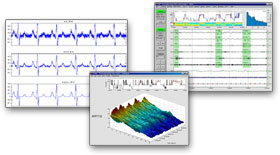

Signal Processing Toolbox Demos
| Signal Processing Toolbox Demos |
Perform signal processing, analysis, and algorithm development
The Signal Processing Toolbox is a collection of MATLAB functions that
provides a rich, customizable framework for analog and digital signal
processing. Graphical user interfaces support interactive analyses, and
command-line functions support advanced algorithm development. The toolbox
provides two categories of tools:
Command line functions in the following categories:
- Analog filter design, analysis, transformation, and discretization
- Discrete-time filter design, analysis, transformation and implementation
- Parametric modeling and linear prediction
- Statistical signal processing and spectral analysis.
- Waveform generation

A suite of interactive graphical user interfaces for:
- Filter design and analysis: FDATool
- Filter visualization: FVTool
- Window design and analysis: WinTool
- Window visualization: WVTool
- Signal plotting and analysis, spectral analysis and filtering signals: SPTool
Full
Product Description